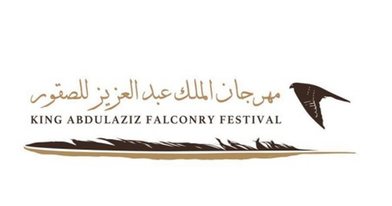

المهرجان
مرر مؤشر الفأرة على الصور لتظهر لك معلومات حول المهرجان.
مهرجان الجنادرية

مهرجان الجنادرية هو مهرجان تراثي وثقافي يقام في المملكة العربية السعودية منذ عام 1405 هـ / 1985 وكانت الدورة الأولى للمهرجان في 24 مارس 1985، غالباً ما يقام في فصل الربيع بشهري فبراير ومارس، ويجذب العديد من الزوار داخل وخارج المملكة. ويضم المهرجان قرية متكاملة للتراث والحلي القديمة والأدوات التي كان يستخدمها الإنسان السعودي في بيئته قبل أكثر من خمسين عاماً ومعارض للفنون التشكيلية.
.jpg)
.jpg)

.jpg)
مهرجان الملك عبد العزيز للإبل

مهرجان الملك عبد العزيز للإبل هو مهرجان سنوي ثقافي واقتصادي ورياضي وترفيهي يقام في المملكة العربية السعودية برعايةٍ ملكية، ويهدف إلى تأصيل تراث الإبل وتعزيزه في الثقافة السعودية والعربية والإسلامية، وتوفير وجهة ثقافية وسياحية ورياضية وترفيهية واقتصادية عن الإبل وتراثها.


ليالي الرياض

ليالي الرياض مهرجان يضم فعاليات مميزة وممتعة للجميع لقضاء وقت عائلي في أجواء من المرح والتجارب الترفيهية الحديثة


مهرجان الدرعية للفروسية

مهرجان الدرعية للفروسيّة هو مهرجان الفروسية وقفز الحواجز، يُقام سنويا ضمن فعاليات موسم الدرعية، في مركز الدهامي للفروسية، في منطقة الدرعية التاريخية بالمملكة العربية السعودية. يتنافس خلال الحدث الفرسان والفارسات من السعودية ومن مختلف دول العالم، في أجواء تراثية وتاريخية وفق أعلى المعايير العالمية.

.jpg)
.jpg)

.jpg)
مهرجان الملك عبدالعزيز للصقور

مهرجان الملك عبد العزيز للصقور، مهرجان دولي ينظمه نادي الصقور السعودي، وهو المسابقة الأكبر في العالم للصقور، حيث يشهد مشاركة نخبة من ملاك الصقور في المملكة ودول مجلس التعاون لدول الخليج العربي. ويعد المهرجان الأكبر من نوعه على مستوى العالم، ويستهدف جميع فئات الصقور، وذلك عن طريق المشاركة في مسابقتي الملواح والمزاين. ويستمدالمهرجان أهميته من قدرته على جمع أكبر قدر من الصقور والصقّارين من كل الدول، في حدث واحد؛ إذ دخلت نسخته الأولى في 2018 موسوعة غينيس للأرقام القياسية، مسجلا مشاركة 1723 صقرا.


سماء فانتوم

سماء فانتوم مهرجان يضم فعاليات ترفيهية ثقافية لمحبي الثقافة الآسيوية من الأنمي والمانجا والفن الكوري ويحتوي على علروض أزياء , ركن رسم /كاريكتور و ألعاب إلكترونية